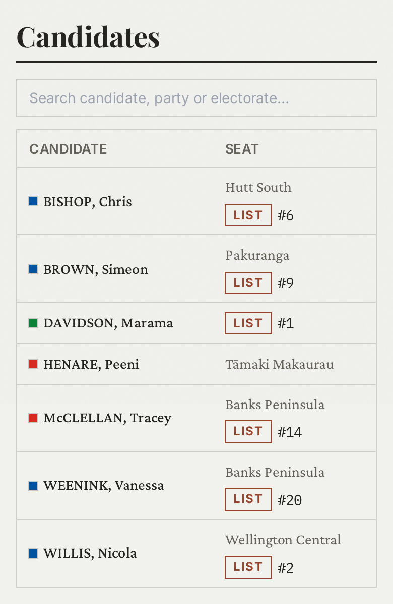
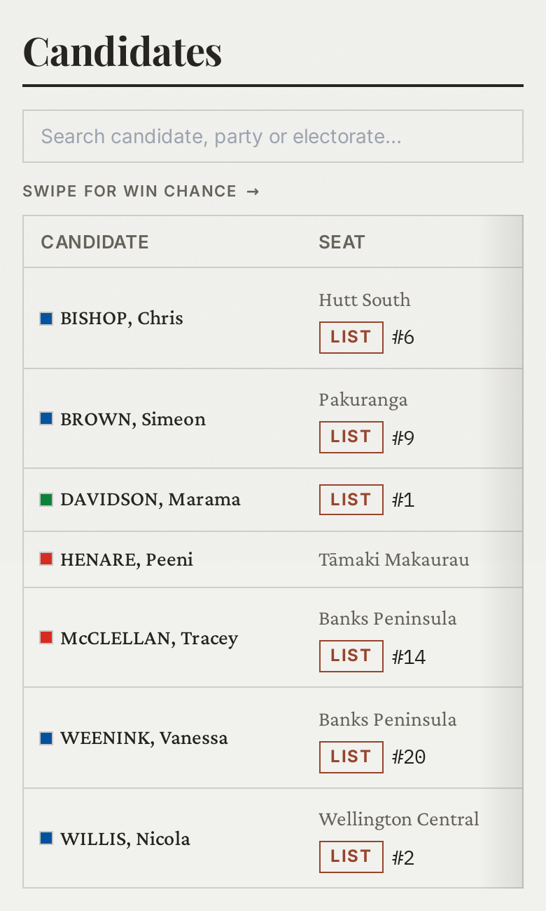
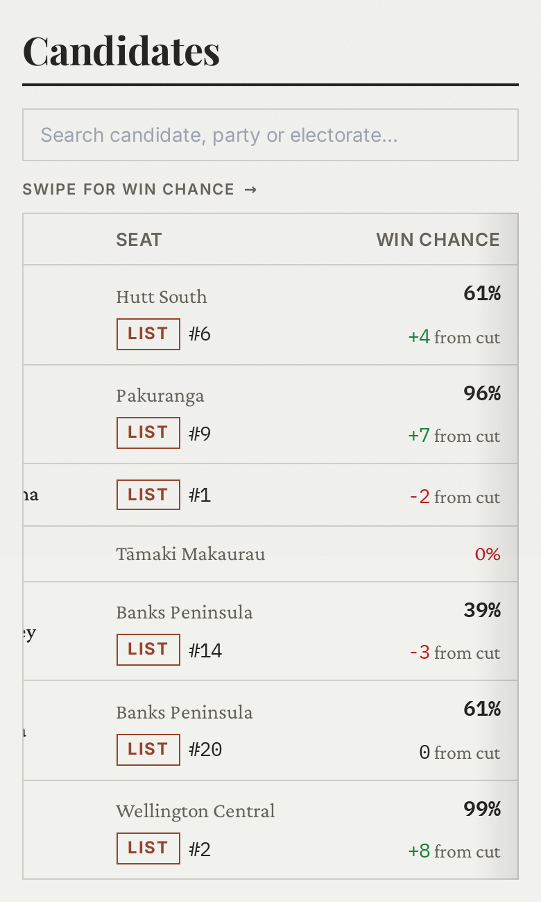
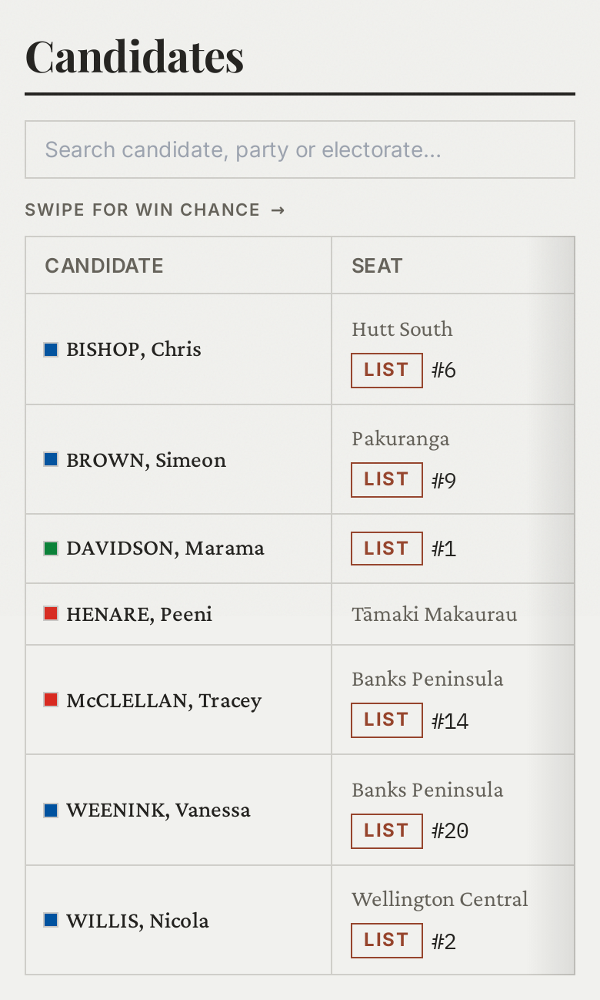
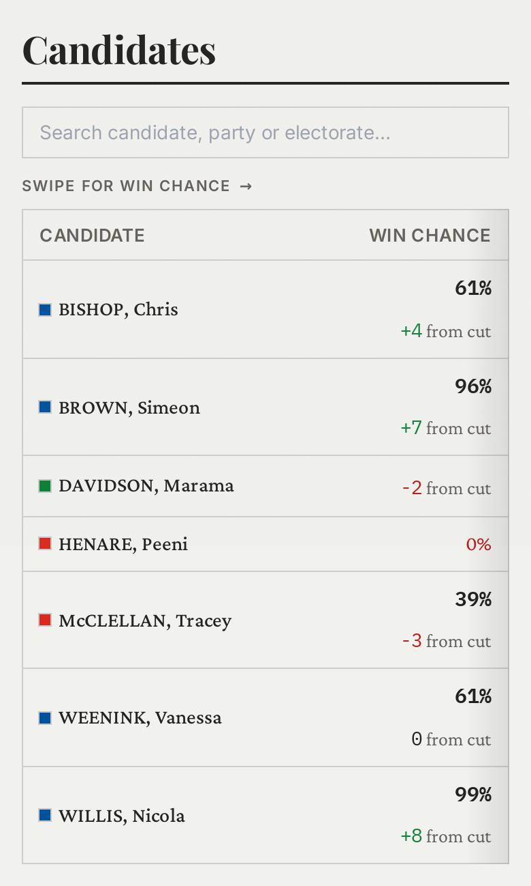
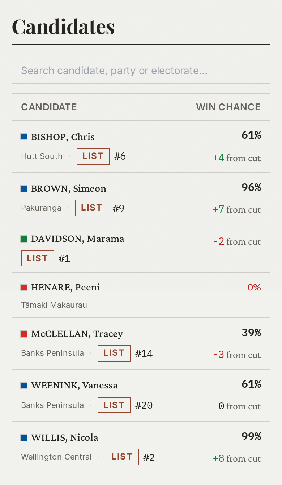
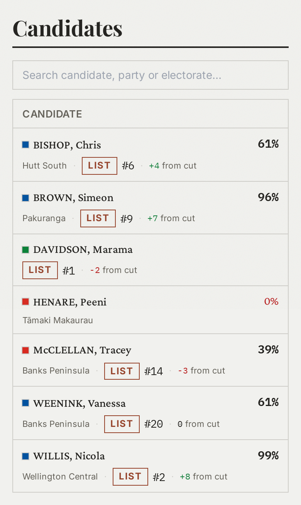

Win chance on a phone
On a phone the Candidates table shows two columns, Candidate and Seat, and the Win chance column is dropped at sm. That leaves the number the page is for, and the distance from the party’s cut that explains the List route, invisible below 640px. Four ways to put them back, all at 390px with the app’s own tokens and classes. Every one of them leaves the four-column table at sm and up unchanged.
B, the pinned name. The table scrolls to the chance and the candidate column stays put, so a reader who swipes right never loses whose row they are on. Corrected after the first pass: at full scroll nothing is empty and nothing is cut off. The seat column slides under the pinned one and leaves a 21px tail, the chance cell fills the rest, and the two numbers sit exactly where the four-column table puts them.
In code, B is three moves. The Win chance column loses its hidden; the candidate cell and its header take sticky left-0 with a paper background and a hairline so the seat column passes under it cleanly (both reset at sm, where the table does not scroll); and the swipe cue is a sm:hidden line above the table. The right-edge fade should hide itself once the table is scrolled to the end, which is a scroll listener the drawing cannot show. Desktop keeps all four columns.







Not mocked: tap a row to reveal it. A disclosure would keep the table narrow, but it hides the number behind one tap per row on a page listing every candidate in the country, and the chance is the thing a reader is scanning for.
Tokens, utilities and component classes are the real ones, compiled from packages/dashboard/src/styles/index.css; the markup is not the component. Captured at 390×2. Names and figures are illustrative and built to cover the four row shapes the table can take: a seat candidate who is also on a list, a list-only candidate, a seat-only candidate the model does not price (0%, in red) and one sitting exactly on the cut.